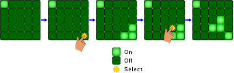
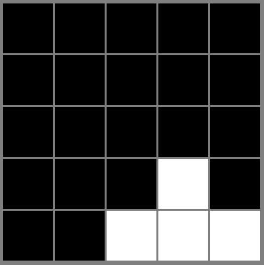
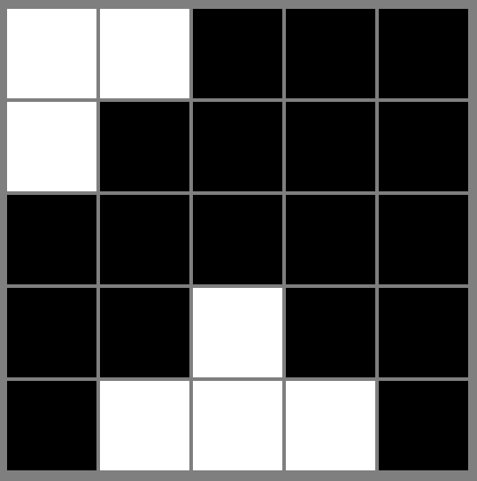
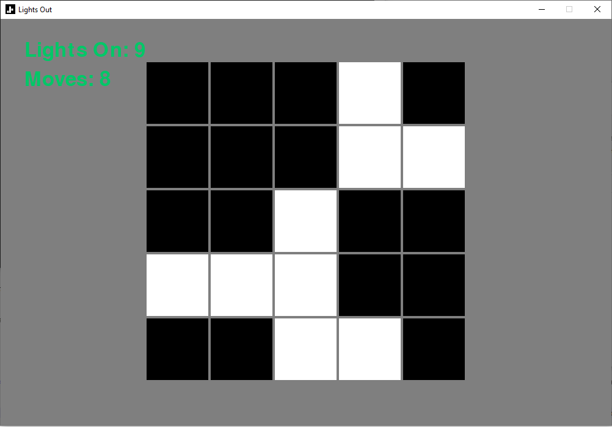
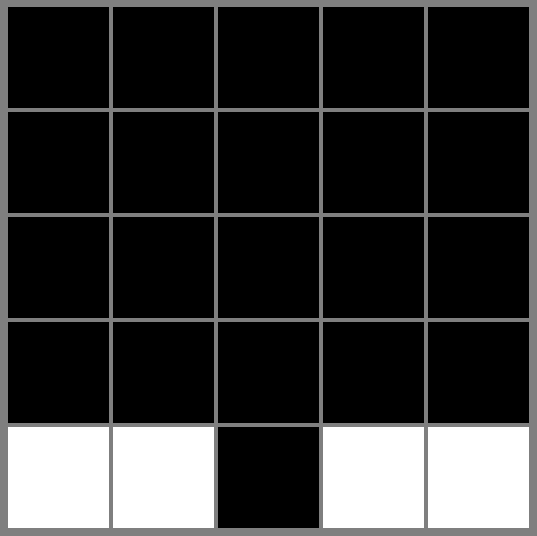
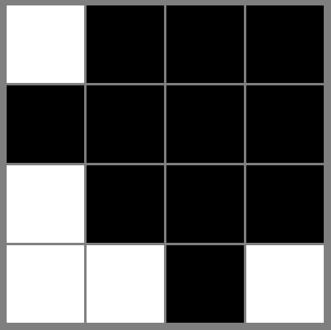

Lights Out
Lights Out is a classic game, that is at once both simple and difficult. It is simple in that it is very easy to understand how to play, but difficult in that winning is very complicated even with this knowledge. This project develops a version of the game using Python's pygame module, and looks at some of the mathematics behind the game.
Setup and Rules
Lights Out consists of a grid of squares, normally with 5 rows and 5 columns, although the grid can be of any size. Each square can be in one of two states: off, or on. The grid begins with each square in a random state, and the goal is to turn all of the squares off. This is complicated as toggling one square (changing it from off to on, or vice versa) also changes the state of all of that square's immediate neighbours. The image below shows some examples of this.
Although the rules and objective of the game can be stated in no more than two sentences, it can be extremely tricky to solve a given grid. Even with some practice, it can take many moves to figure out how to turn off all of the squares. As well as this, there are some initial configurations that do not have any solution! In these cases, you could spend hours trying to turn all the lights off, without realizing that the task is impossible. Clearly, for programming an implementation of this game, we need some way of ensuring that our starting grids are always solvable. One way to do this can be derived from a very important branch of mathematics: group theory.
Configurations as Elements of a Group
In mathematics, a group is a set of elements, equipped with a binary operation (sometimes called addition or multiplication), that satisfies specific properties. For example, if the binary operation is applied to an element of the group, it must be possible to "reverse" this operation (i.e. every element of the group has an "inverse"). The group also must have an "identity element", which does not change other elements when it is applied to them via the binary operation. A more precise definition of a group can be found here.
Some of the configurations of the Lights Out grid can be thought of as a group. We can consider the solved grid (consisting of all squares off) as our "identity element" for the group. This element is usually called O. Then, the other elements of the group are the configurations that can be reached by selecting different squares. The following image shows a configuration that can be reached from the solved grid with just one move. Black squares are off, and white squares are on: By labelling the squares 1 to 25, we can name these configurations based on the square that must be selected to reach them. Let ai be the configuration reached by selecting square i of the solved grid. For example, the grid in the picture above would be a24, since it is reached by selecting square 24 (counting from the top-left across). Now that we have notation to describe selections of any square, we can make lots of different configurations by combining the ai. This is the "binary operation" of our group: to "multiply" two elements, we simply apply them in sequence. The result is written by simply writing the corresponding ai next to each other.
The image above shows the configuration a1a23 as it is reached by selecting the 23rd square, then the 1st square (note group elements are usually read from right to left, so the operation at the right is applied first). Interestingly, it does not matter which order we apply these operations in. The grid we get at the end is the same. That is, a1a23 = a23a1. It is possible to show that this is true for any operations we choose - the order of the operations does not matter, for any two squares we select. In group theory language, a group with this property is called commutative or abelian.
Generating Solvable Configurations
To generate solvable configurations, we can use the "inverse" property of group theory. Note that if we select the same square twice in the solved grid, we simply get the solved grid back again. This is because selecting the same square twice turns on that square (and all its neighbours), then immediately turns it off again. In our group element notation, we have aiai = O, O being the solved grid. This is a powerful observation, because it shows that any sequence of moves starting from the solved grid can be reversed. That is, if we generate a particular configuration by selecting squares at random on the solved grid, that particular configuration can be reduced to the solved grid again by simply selecting each square again. Since the group is abelian, we do not even have to select these squares in any particular order - we just have to select them all once to get back to the solved grid. Hence, to ensure our grids have a solution, we can just start with a solved grid and randomly select some squares. In the code, 6 squares are randomly selected each time to generate some complexity, while still giving a solvable puzzle.
Interestingly, the fact that the group is abelian also places an upper bound on the maximum number of moves required to solve any solvable grid. Suppose we have a solvable grid (call it S). Since the grid is solvable, we can write it as a sequence of moves starting from the solved grid:
S = ai1ai2...aiN
Note since the group is abelian, if any index im appears twice (i.e. if any square is selected twice), the two occurences of aim will immediately cancel each other out. This leaves the overall product with two moves less than it had before. But there are only 25 different aim as there are 25 squares. So any longer list of moves can be reduced to a list with only 25 moves (since a longer list will always have repeated moves by the pigeonhole principle). Hence S is at most 25 moves away from the solved grid.
More discussion on the group theory (and linear algebra) behind Lights Out can be found here.
Programming
In this project, the game is implemented using Python's pygame module, which is perfect for small projects such as this. The grid is stored as a 2D array of instances of a "Square" class, which can have a state (ON or OFF) and immediate neighbours (other Squares). When the player clicks on a square, the states of all the neighbours are changed, as well as the state of the square itself. Two counters also tell the player how many lights are left, and how many moves they have made:
A menu was also added to allow the player to choose between a 4x4 board, or 5x5 before playing. Different board sizes change the difficulty of the game somewhat. However, all the boards can be solved using an algorithm described below:
The Light Chasing Algorithm
Up to now we have only considered how to generate puzzles that are solvable. We have not yet looked at how to actually solve such a puzzle. One popular algorithm to do this is the "light chasing" algorithm. It involves removing all the lights in the top row by selecting the squares directly below them. Then, in the 2nd row, all the remaining lights can be removed by selecting the squares directly below them in the 3rd row again. This process continues until the only lights that remain are all in the bottom row.
Although it is not obvious how to proceed from here, the problem has been reduced to something simpler than we had before. We now just need to solve every possible configuration of bottom-row lights, and then we can solve any (solvable) grid put in front of us. Once the lights have been confined to the bottom row, a common way to proceed is to select a specific set of top-row squares, then chase the resulting lights down to the bottom again. This second chase will result in a solved grid.
To know which top-row lights to select, a lookup table must be used. A lookup table from this StackExchange answer is shown here:
| Lights on Bottom Row | Lights to Select on Top Row |
|---|---|
| 1,2,3 | 2 |
| 1,2,4,5 | 3 |
| 1,3,4 | 5 |
| 1,5 | 1,2 |
| 2,3,5 | 1 |
| 2,4 | 1,4 |
| 3,4,5 | 4 |
For example, if the 1st, 2nd and 3rd lights on the bottom row are on, the 2nd light on the top row must be pressed, and then "chased" down to solve the grid. A systematic derivation of this lookup table can be found in this paper.
For some, it may seem "disappointing" that a relatively simple algorithm such as light-chasing exists to solve the game of Lights Out. It certainly seems less fun to just try your best to remove all the lights, when you know that an algorithm exists to solve it, removing any need of intuition or practice. To resolve this issue, we can change the rules very slightly, in a way that makes the light-chasing algorithm useless. This restores some of the initial challenge of the game.
Toroidal Boundary Conditions
The power of the light-chasing algorithm comes from the fact that the lights of the bottom row do not affect the top row when they are selected. This makes it possible to confine all of the lights to a single row and then apply the lookup table as described. This is no longer true, however, if we change how the edges affect each other. We can "fold" the grid, to connect the top and bottom edges, as well as the left and right edges. This way, selecting a light on the bottom edge will also change a light on the top edge. The same will occur on the left and right edges. Mathematically, this is equivalent to playing the game on a torus, giving rise to the term "toroidal boundary conditions".
Though it is only a minor change to the rules, changing the behaviour of the edges makes drastic changes to how the game is solved, and also requires players to find a new intuition for solving the puzzle. For example, the following configuration (shown on a 4x4 grid) is solvable in only one move in the toroidal case:
Clearly, this connects the edges in unintuitive ways. One could also adjust the code to play the game on a Möbius strip, in which edges are connected in opposite directions to one another. However, the torus has already solved our goal of breaking the light-chasing algorithm, bringing back some of the initial mystery of Lights Out.